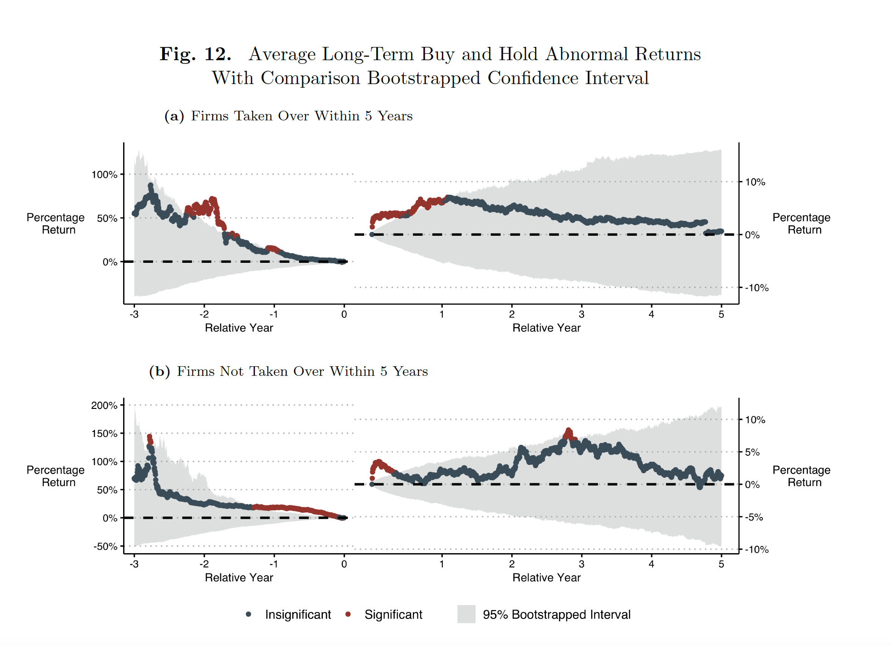

Working Paper

Journal of Accounting Research 2024 (Joint with David F. Larcker, Charles G. McClure, Durgesh Saraph, and Edward M. Watts)
Journal of Financial Economics 22(2) 2022 (Joint with David F. Larcker and Charles C.Y. Wang)
Journal of Law, Finance, and Accounting 5(2) 2020 (Joint with Jonah B. Gelbach)
Virginia Law & Business Review 13(2) 2019 (Joint with Andrew Winden)
Stanford Law Review 68 2016